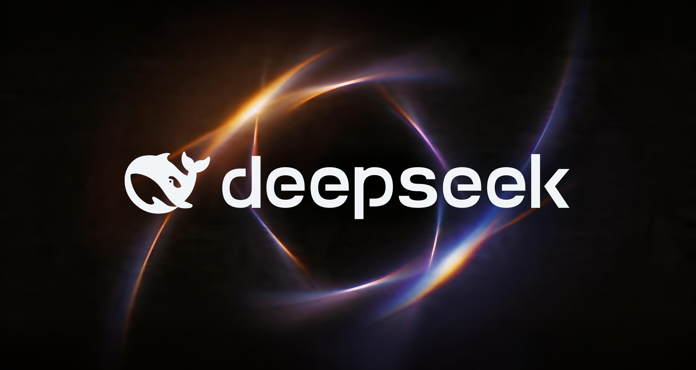
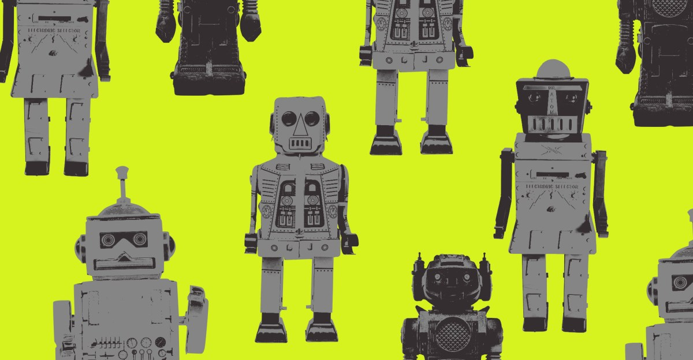
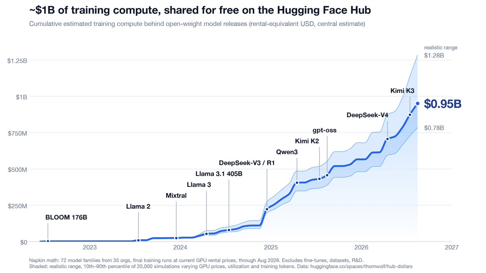
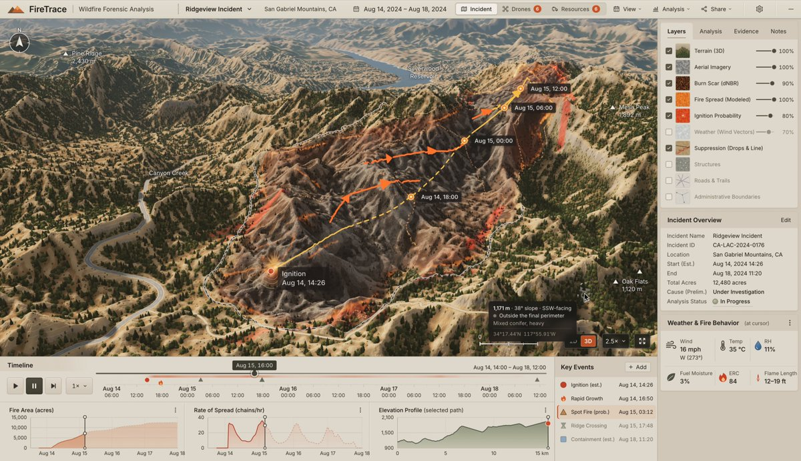
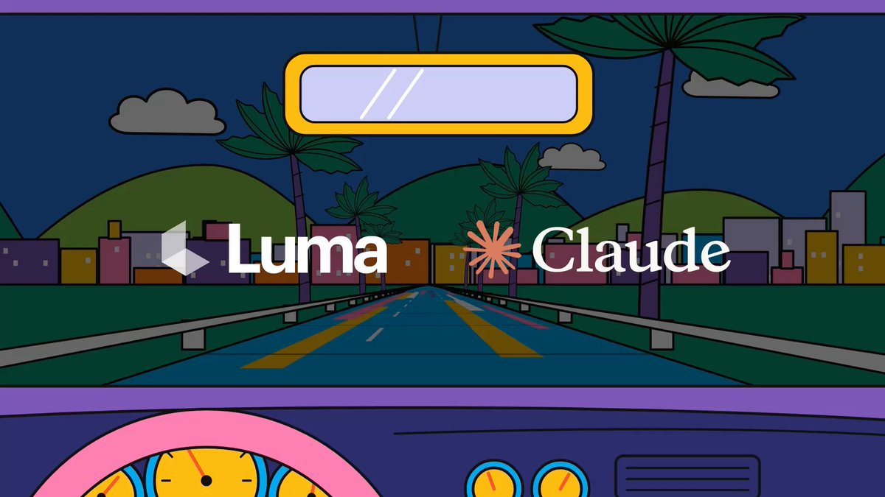
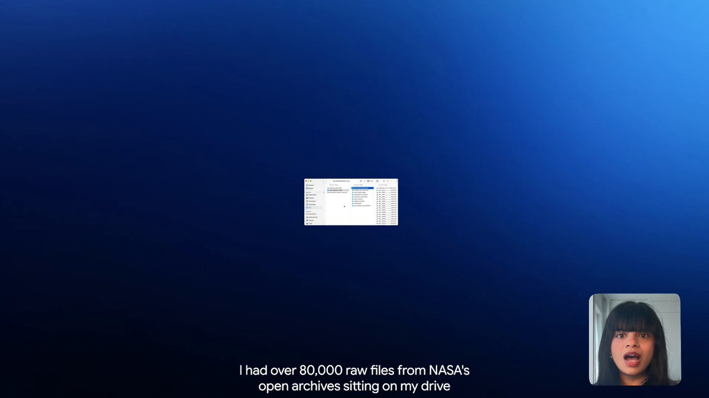
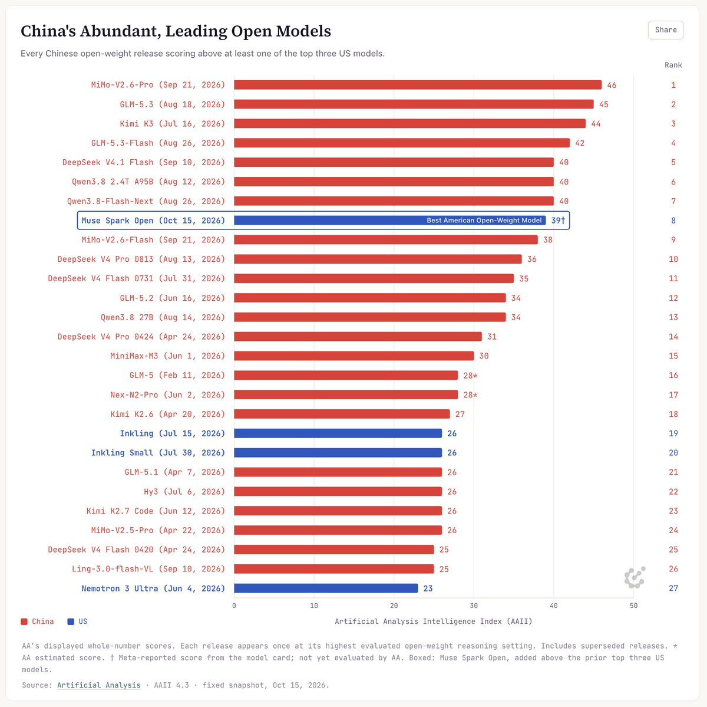
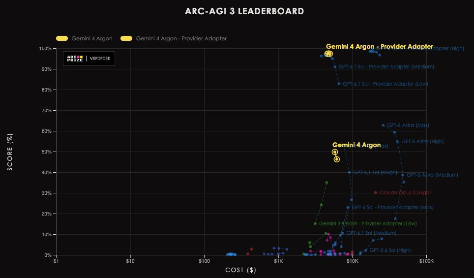
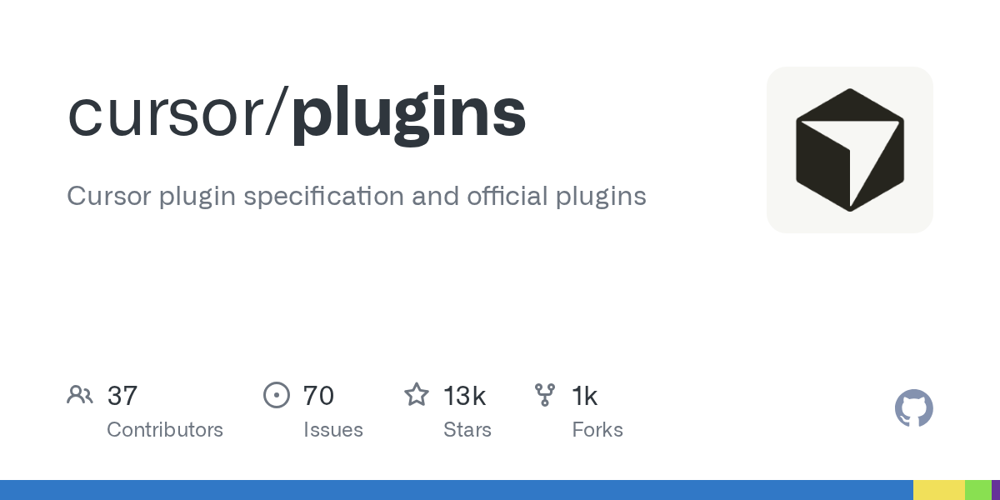

01
DeepSeek 搜索与抓取按千次成功请求收费 0.75 美元

DeepSeek 文档给出的搜索与抓取价格为每千次成功请求 0.75 美元，引发了本次采集中最热的 AI 相关 Hacker News 讨论。对需要联网的代理而言，这是明确的成本参考，但价格本身不能证明搜索覆盖面或质量。
每天一次，过滤 AI 噪音

DeepSeek 文档给出的搜索与抓取价格为每千次成功请求 0.75 美元，引发了本次采集中最热的 AI 相关 Hacker News 讨论。对需要联网的代理而言，这是明确的成本参考，但价格本身不能证明搜索覆盖面或质量。
Tom’s Hardware 报道称，Anthropic 的 AI 安全立法提案涉及 50 人死亡或 10 亿美元损失的门槛，并强调商务部的干预角色。这是受到质疑的提案，并非已生效法律；核心问题是由谁干预，以及何种损害会触发权限。
Hacker News 链接的 OpenCode 公告称，安全事件影响了 1.4% 的控制台用户。采集到的标题未说明泄露数据、根因或修复细节。编码代理的账号与服务安全因此值得关注，受影响用户应以原公告确认范围及应对措施。

The Verge 报道网站正在限制 AI 代理访问，引发较多讨论。代理能否在网页上行动，不仅取决于推理能力，也取决于访问权限与可用性。采集材料并未证明存在统一的封禁政策，开发团队需要逐站确认限制。

Nieman Lab 报道，法律专家认为 Meta 条款虽调整措辞，仍保留广泛抓取权限。这让线上内容的合同控制再次进入 AI 数据讨论。报道标题表达的是对条款范围的担忧，并非认定某项具体使用违法。
Sphinx 是面向现有编码代理流程的开源钩子，在生产发布前通过问卷检查开发者是否理解代码。它提供具体的人类复核步骤，但通过问卷并不等于软件正确性得到保证。

Hugging Face 联合创始人 Thomas Wolf 粗略估算，Hub 上共享模型的训练算力价值接近 10 亿美元，而 2023 年底不足 4000 万美元。他明确将其称为粗算，这并非审计估值，也不代表模型采用统一许可证。
François Chollet 认为，即使代理承担代码编写，软件工程师的需求和工作量仍可能增长。他描述的现象属于个人观察，而非劳动力市场研究。对团队而言，关键是实现自动化后，审查、方向选择和责任如何重新分配。

Thomas Wolf 称 DeepSeek 更新将 Terminal-Bench 4.0 从 31.2 提升至 42.3，并报告 DeepSWE 得分 77.0，同时关注任务完成速度。这些是评论转述的基准数据，值得实测，但不能推断所有工作负载都有同等收益。

Claude 官方账号展示了基于 Opus 5.5 的野火分析原型，可绘制火势随时间的变化并追踪热点。这是结合时空信息构建应用的实例，但展示不等于经过应急使用验证，不能据此认定其已具备实际救灾部署条件。

Luma 表示用户可通过 Claude Motion 内的 Send to Luma 将动画转入 Luma 继续制作。这是一项工作流衔接说明，而非新模型发布。公告没有交代格式、价格或传输限制，因此这些细节仍需用户确认。

Google 展示 Gemini 4 Argon 处理 NASA 开放档案中的八万份文件，按照设计要求生成幻灯片，输入包含表格、图片、PDF 和视频等。该案例突出异构资料整合，但仍是厂商演示，未独立证明准确率、完整性或运行成本。

Nathan Lambert 认为美国开放权重模型重新取得进展，与中国模型的时间差距至少缩小一半，约为三个月；相关评论聚焦 Meta。这是分析者判断，而非统一基准结果，部署适用性与许可条件仍需分别评估。

François Chollet 表示 Argon 在 ARC-AGI-3 上的表现轮廓与 Astra 相似，认为 Google 已重返前沿。该帖是定性评价，没有提供完整分数或方法。单一基准表现不能代替对编码、多模态及生产可靠性的全面评估。
François Chollet 认为对话 AI 有望扩大一对一辅导的覆盖面，并强调主动参与式学习。这是在讨论教育机会，并未报告对照实验结果。教育产品的关键是让学习者参与推理，而不只是接收模型答案。
Nathan Lambert 质疑将 API 密钥盗窃等网络攻击也统称为蒸馏，并表示相关活动规模及其与训练的联系仍不清楚。技术过程、安全事件和归因应分开讨论，因为凭据防护与使用模型输出训练涉及不同问题。

cursor/plugins 仓库提供 Cursor 插件规范及官方插件，本次采集显示 12,639 星且在报告日更新。统一规范为扩展开发提供参考，但仓库简介不能证明跨代理兼容性、安全性或插件质量，接入前仍需审查规范与依赖。
Ruflo 自述为代理运行框架，提供自主流程协作、自适应记忆、联邦及向量检索增强生成，并集成多种编码助手。采集显示 76,390 星且报告日更新。这些是项目描述与关注度信号，并非独立可靠性测试。